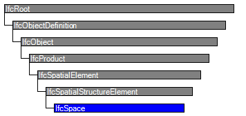

| Raum |
 | Space |
 | Local |
| Item | SPF | XML | Change | Description | 4.0.0.0 |
|---|---|---|---|---|
| IfcSpace | ||||
| OwnerHistory | MODIFIED | Instantiation changed to OPTIONAL. | ||
| CompositionType | MODIFIED | Instantiation changed to OPTIONAL. | ||
| PredefinedType | MODIFIED | Name changed from InteriorOrExteriorSpace to PredefinedType. Type changed from IfcInternalOrExternalEnum to IfcSpaceTypeEnum. Instantiation changed to OPTIONAL. |
A space represents an area or volume bounded actually or theoretically. Spaces are areas or volumes that provide for certain functions within a building.
A space is associated to a building storey (or in case of exterior spaces to a site). A space may span over several connected spaces. Therefore a space group provides for a collection of spaces included in a storey. A space can also be decomposed in parts, where each part defines a partial space. This is defined by the CompositionType attribute of the supertype IfcSpatialStructureElement which is interpreted as follow:
NOTE View definitions and implementation agreements may restrict spaces with CompositionType=ELEMENT to be non-overlapping.
The IfcSpace is used to build the spatial structure of a building (that serves as the primary project breakdown and is required to be hierarchical). The spatial structure elements are linked together by using the objectified relationship IfcRelAggregates.
Figure 124 shows the IfcSpace as part of the spatial structure. It also serves as the spatial container for space related elements.
NOTE Detailed requirements on mandatory element containment and placement structure relationships are given in view definitions and implementer agreements.
 |
Figure 124 — Space composition |
The following guidelines should apply for using the Name, Description, LongName and ObjectType attributes.
NOTE In cases of inconsistency between the geometric representation of the IfcSpace and the combined geometric representations of the surrounding IfcRelSpaceBoundary, the geometric representation of the space should take priority over the geometric representation of the surrounding space boundaries.
Figure 125 describes the heights and elevations of the IfcSpace.
 |
Figure 125 — Space elevations |
HISTORY New entity in IFC1.0
| # | Attribute | Type | Cardinality | Description | R |
|---|---|---|---|---|---|
| 10 | PredefinedType | IfcSpaceTypeEnum | ? |
Predefined generic types for a space that are specified in an enumeration. There might be property sets defined specifically for each predefined type.
NOTE Previous use had been to indicates whether the IfcSpace is an interior space by value INTERNAL, or an exterior space by value EXTERNAL. This use is now deprecated, the property 'IsExternal' at 'Pset_SpaceCommon' should be used instead. IFC4 CHANGE The attribute has been renamed from ExteriorOrInteriorSpace with upward compatibility for file based exchange. | X |
| 11 | ElevationWithFlooring | IfcLengthMeasure | ? | Level of flooring of this space; the average shall be taken, if the space ground surface is sloping or if there are level differences within this space. | X |
| Rule | Description |
|---|---|
| CorrectPredefinedType | Either the PredefinedType attribute is unset (e.g. because an IfcSpaceType is associated), or the inherited attribute ObjectType shall be provided, if the PredefinedType is set to USERDEFINED. |
| CorrectTypeAssigned | Either there is no space type object associated, i.e. the IsTypedBy inverse relationship is not provided, or the associated type object has to be of type IfcSpaceType. |

| # | Attribute | Type | Cardinality | Description | R |
|---|---|---|---|---|---|
| IfcRoot | |||||
| 1 | GlobalId | IfcGloballyUniqueId | Assignment of a globally unique identifier within the entire software world. | X | |
| 2 | OwnerHistory | IfcOwnerHistory | ? |
Assignment of the information about the current ownership of that object, including owning actor, application, local identification and information captured about the recent changes of the object,
NOTE only the last modification in stored - either as addition, deletion or modification. IFC4 CHANGE The attribute has been changed to be OPTIONAL. | X |
| 3 | Name | IfcLabel | ? | Optional name for use by the participating software systems or users. For some subtypes of IfcRoot the insertion of the Name attribute may be required. This would be enforced by a where rule. | X |
| 4 | Description | IfcText | ? | Optional description, provided for exchanging informative comments. | X |
| IfcObjectDefinition | |||||
| HasAssignments | IfcRelAssigns @RelatedObjects | S[0:?] | Reference to the relationship objects, that assign (by an association relationship) other subtypes of IfcObject to this object instance. Examples are the association to products, processes, controls, resources or groups. | X | |
| Nests | IfcRelNests @RelatedObjects | S[0:1] | References to the decomposition relationship being a nesting. It determines that this object definition is a part within an ordered whole/part decomposition relationship. An object occurrence or type can only be part of a single decomposition (to allow hierarchical strutures only).
IFC4 CHANGE The inverse attribute datatype has been added and separated from Decomposes defined at IfcObjectDefinition. | ||
| IsNestedBy | IfcRelNests @RelatingObject | S[0:?] | References to the decomposition relationship being a nesting. It determines that this object definition is the whole within an ordered whole/part decomposition relationship. An object or object type can be nested by several other objects (occurrences or types).
IFC4 CHANGE The inverse attribute datatype has been added and separated from IsDecomposedBy defined at IfcObjectDefinition. | X | |
| HasContext | IfcRelDeclares @RelatedDefinitions | S[0:1] | References to the context providing context information such as project unit or representation context. It should only be asserted for the uppermost non-spatial object.
IFC4 CHANGE The inverse attribute datatype has been added. | ||
| IsDecomposedBy | IfcRelAggregates @RelatingObject | S[0:?] | References to the decomposition relationship being an aggregation. It determines that this object definition is whole within an unordered whole/part decomposition relationship. An object definitions can be aggregated by several other objects (occurrences or parts).
IFC4 CHANGE The inverse attribute datatype has been changed from the supertype IfcRelDecomposes to subtype IfcRelAggregates. | X | |
| Decomposes | IfcRelAggregates @RelatedObjects | S[0:1] | References to the decomposition relationship being an aggregation. It determines that this object definition is a part within an unordered whole/part decomposition relationship. An object definitions can only be part of a single decomposition (to allow hierarchical strutures only).
IFC4 CHANGE The inverse attribute datatype has been changed from the supertype IfcRelDecomposes to subtype IfcRelAggregates. | X | |
| HasAssociations | IfcRelAssociates @RelatedObjects | S[0:?] | Reference to the relationship objects, that associates external references or other resource definitions to the object.. Examples are the association to library, documentation or classification. | X | |
| IfcObject | |||||
| 5 | ObjectType | IfcLabel | ? |
The type denotes a particular type that indicates the object further. The use has to be established at the level of instantiable subtypes. In particular it holds the user defined type, if the enumeration of the attribute PredefinedType is set to USERDEFINED.
| X |
| IsTypedBy | IfcRelDefinesByType @RelatedObjects | S[0:1] | Set of relationships to the object type that provides the type definitions for this object occurrence. The then associated IfcTypeObject, or its subtypes, contains the specific information (or type, or style), that is common to all instances of IfcObject, or its subtypes, referring to the same type.
IFC4 CHANGE New inverse relationship, the link to IfcRelDefinesByType had previously be included in the inverse relationship IfcRelDefines. Change made with upward compatibility for file based exchange. | X | |
| IsDefinedBy | IfcRelDefinesByProperties @RelatedObjects | S[0:?] | Set of relationships to property set definitions attached to this object. Those statically or dynamically defined properties contain alphanumeric information content that further defines the object.
IFC4 CHANGE The data type has been changed from IfcRelDefines to IfcRelDefinesByProperties with upward compatibility for file based exchange. | X | |
| IfcProduct | |||||
| 6 | ObjectPlacement | IfcObjectPlacement | ? | Placement of the product in space, the placement can either be absolute (relative to the world coordinate system), relative (relative to the object placement of another product), or constraint (e.g. relative to grid axes). It is determined by the various subtypes of IfcObjectPlacement, which includes the axis placement information to determine the transformation for the object coordinate system. | X |
| 7 | Representation | IfcProductRepresentation | ? | Reference to the representations of the product, being either a representation (IfcProductRepresentation) or as a special case a shape representations (IfcProductDefinitionShape). The product definition shape provides for multiple geometric representations of the shape property of the object within the same object coordinate system, defined by the object placement. | X |
| IfcSpatialElement | |||||
| 8 | LongName | IfcLabel | ? |
Long name for a spatial structure element, used for informal purposes. It should be used, if available, in conjunction with the inherited Name attribute.
NOTE In many scenarios the Name attribute refers to the short name or number of a spacial element, and the LongName refers to the full descriptive name. | X |
| ContainsElements | IfcRelContainedInSpatialStructure @RelatingStructure | S[0:?] | Set of spatial containment relationships, that holds those elements, which are contained within this element of the project spatial structure.
NOTE The spatial containment relationship, established by IfcRelContainedInSpatialStructure, is required to be an hierarchical relationship, where each element can only be assigned to 0 or 1 spatial structure element. | X | |
| ServicedBySystems | IfcRelServicesBuildings @RelatedBuildings | S[0:?] | Set of relationships to systems, that provides a certain service to the spatial element for which it is defined. The relationship is handled by the objectified relationship IfcRelServicesBuildings.
IFC4 CHANGE The inverse attribute has been promoted to the new supertype IfcSpatialElement with upward compatibility for file based exchange. | X | |
| IfcSpatialStructureElement | |||||
| 9 | CompositionType | IfcElementCompositionEnum | ? |
Denotes, whether the predefined spatial structure element represents itself, or an aggregate (complex) or a part (part). The interpretation is given separately for each subtype of spatial structure element. If no CompositionType is asserted, the dafault value 'ELEMENT' applies.
IFC4 CHANGE Attribute made optional. | X |
| IfcSpace | |||||
| 10 | PredefinedType | IfcSpaceTypeEnum | ? |
Predefined generic types for a space that are specified in an enumeration. There might be property sets defined specifically for each predefined type.
NOTE Previous use had been to indicates whether the IfcSpace is an interior space by value INTERNAL, or an exterior space by value EXTERNAL. This use is now deprecated, the property 'IsExternal' at 'Pset_SpaceCommon' should be used instead. IFC4 CHANGE The attribute has been renamed from ExteriorOrInteriorSpace with upward compatibility for file based exchange. | X |
| 11 | ElevationWithFlooring | IfcLengthMeasure | ? | Level of flooring of this space; the average shall be taken, if the space ground surface is sloping or if there are level differences within this space. | X |
Space Attributes
The Space Attributes concept applies to this entity.
Object Typing
The Object Typing concept template applies to this entity as shown in Table 35.
| ||||
Table 35 — IfcSpace Object Typing |
Property Sets for Objects
The Property Sets for Objects concept template applies to this entity as shown in Table 36.
Quantity Sets
The Quantity Sets concept template applies to this entity as shown in Table 37.
| ||||||||||||||||||||||||||||||||||||||||||||||||||||||||||||||||||||||||||||
Table 37 — IfcSpace Quantity Sets |
Spatial Decomposition
The Spatial Decomposition concept template applies to this entity as shown in Table 38.
| ||||
Table 38 — IfcSpace Spatial Decomposition |
By using the inverse relationship IfcSpace.Decomposes it references IfcSite || IfcBuildingStorey by IfcRelAggregates.RelatingObject.
Spatial Container
The Spatial Container concept applies to this entity.
Product Local Placement
The Product Local Placement concept applies to this entity.
The local placement for IfcSpace is defined at its supertype IfcProduct. It is defined by the IfcLocalPlacement, which defines the local coordinate system that is referenced by all geometric representations.
FootPrint GeomSet Geometry
The FootPrint GeomSet Geometry concept template applies to this entity as shown in Table 39.
| ||||||||||||
Table 39 — IfcSpace FootPrint GeomSet Geometry |
The following constraints apply to the 2D representation:
 |
EXAMPLE Figure 125 shows a two-dimensional bounded curve representing the foot print of IfcSpace. |
Figure 125 — Space footprint |
Body SweptSolid PolyCurve Geometry
The Body SweptSolid PolyCurve Geometry concept template applies to this entity as shown in Table 40.
| ||||||||
Table 40 — IfcSpace Body SweptSolid PolyCurve Geometry |
The following constraints apply to the 'Body' 'SweptSolid' representation:
Figure 126 shows an extrusion of an arbitrary profile definition with voids into the swept area solid of IfcSpace.
 |
Figure 126 — Space body swept solid |
Object User Identity
The Object User Identity concept (defined at a supertype) does NOT apply to this entity.
Object Predefined Type
The Object Predefined Type concept (defined at a supertype) does NOT apply to this entity.
<?xml version="1.0"?>
<ConceptRoot xmlns:xsi="http://www.w3.org/2001/XMLSchema-instance" xmlns:xsd="http://www.w3.org/2001/XMLSchema" uuid="75217ae0-a1fb-43ad-b52d-a6b5d75e53fb" name="IfcSpace" status="sample" applicableRootEntity="IfcSpace">
<Applicability uuid="00000000-0000-0000-0000-000000000000" status="sample">
<Template ref="c5a21892-3064-4870-ae43-6496eda10540" />
<TemplateRules operator="and" />
</Applicability>
<Concepts>
<Concept uuid="d6239bb5-eddc-4027-a426-172a3b2c2e61" name="Space Attributes" status="sample" override="false">
<Template ref="543a52a7-799c-4349-a0ba-04c3fc2914d3" />
</Concept>
<Concept uuid="a116252d-43fd-4270-bde9-d6b47ad0cfa4" name="Object Typing" status="sample" override="false">
<Template ref="35a2e10e-20df-40f4-ab2f-dacf0a6744f4" />
<TemplateRules operator="and">
<TemplateRule Parameters="RelatingType=IfcSpaceType;" />
</TemplateRules>
</Concept>
<Concept uuid="324dff43-e2e2-47b3-862c-a3ac53308061" name="Property Sets for Objects" status="sample" override="false">
<Template ref="f74255a6-0c0e-4f31-84ad-24981db62461" />
<TemplateRules operator="and">
<TemplateRule Parameters="PsetName=Pset_SpaceCommon;" />
<TemplateRule Parameters="PsetName=Pset_SpaceCoveringRequirements;" />
<TemplateRule Parameters="PsetName=Pset_SpaceThermalDesign;" />
<TemplateRule Parameters="PsetName=Pset_SpaceThermalLoad;" />
</TemplateRules>
</Concept>
<Concept uuid="880fcd23-1511-46ae-9a08-f467e1d6a098" name="Quantity Sets" status="sample" override="false">
<Template ref="6652398e-6579-4460-8cb4-26295acfacc7" />
<Requirements>
<Requirement applicability="export" requirement="recommended" exchangeRequirement="dcd96125-898e-4ff0-b294-eb02afe953aa" />
<Requirement applicability="import" requirement="recommended" exchangeRequirement="dcd96125-898e-4ff0-b294-eb02afe953aa" />
</Requirements>
<TemplateRules operator="and">
<TemplateRule Parameters="QsetName=Qto_SpaceBaseQuantities;" />
</TemplateRules>
</Concept>
<Concept uuid="bc7cd9af-bb2f-42f7-b8a7-c8970e0afe8f" name="Spatial Decomposition" status="sample" override="false">
<Template ref="667f8443-ecce-4a8d-a63f-931fab0453e0" />
<TemplateRules operator="and">
<TemplateRule Description="Relation to the <em>IfcSite</em> to which this space belongs to" Parameters="Spatial Parts=IfcSite;" />
<TemplateRule Description="Relation to the <em>IfcBuildingStorey</em> to which this space belongs to (default)" Parameters="Spatial Parts=IfcBuildingStorey;" />
</TemplateRules>
</Concept>
<Concept uuid="9e219929-5710-412e-b75a-34421fe32645" name="Spatial Container" status="sample" override="false">
<Template ref="61dd08ed-fd01-4955-9337-8afd284a0e6f" />
<Requirements>
<Requirement applicability="export" requirement="recommended" exchangeRequirement="dcd96125-898e-4ff0-b294-eb02afe953aa" />
<Requirement applicability="import" requirement="recommended" exchangeRequirement="dcd96125-898e-4ff0-b294-eb02afe953aa" />
</Requirements>
</Concept>
<Concept uuid="7d82617c-3d38-47cc-86fe-f729fc3ed84f" name="Product Local Placement" status="sample" override="false">
<Template ref="cbe85b5f-7912-4a43-8bb7-1e63bf40b26d" />
</Concept>
<Concept uuid="fcddf0b1-ae2e-4ec0-855b-bc6e976107a8" name="FootPrint GeomSet Geometry" status="sample" override="false">
<Template ref="9456d6d6-a62a-48b4-baff-be2e38baac9c" />
<Requirements>
<Requirement applicability="export" requirement="recommended" exchangeRequirement="dcd96125-898e-4ff0-b294-eb02afe953aa" />
<Requirement applicability="import" requirement="recommended" exchangeRequirement="dcd96125-898e-4ff0-b294-eb02afe953aa" />
</Requirements>
<TemplateRules operator="and">
<TemplateRule Description="A single curve defining the outer boundary" Parameters="Identifier=FootPrint;Type=Curve2D;Items=IfcBoundedCurve;" />
<TemplateRule Description="Set of curves (outer and inner) representing the floor projection," Parameters="Identifier=FootPrint;Type=GeometricCurveSet;Items=IfcGeometricCurveSet;" />
</TemplateRules>
</Concept>
<Concept uuid="eb232576-bd64-469e-87a2-8a77a507e881" name="Body SweptSolid PolyCurve Geometry" status="sample" override="false">
<Template ref="38710ccd-8ff5-41ba-8fda-08300907a02e" />
<TemplateRules operator="and">
<TemplateRule Description="Only extruded area solid shall be used for the swept solid representation." Parameters="Identifier=Body;Type=SweptSolid;Geometry=IfcExtrudedAreaSolid;" />
</TemplateRules>
</Concept>
<Concept uuid="a18635bc-e7ab-4f06-9ea5-e92e6080b248" name="Object User Identity" status="sample" override="false">
<Template ref="c19ec186-9cfd-47fc-a4d4-9fb35008d04a" />
</Concept>
<Concept uuid="7af6ece2-a562-4aa1-b752-f302f5782145" name="Object Predefined Type" status="sample" override="false">
<Template ref="25248261-98df-4d0a-9364-5653575ca421" />
</Concept>
</Concepts>
</ConceptRoot>
| # | Concept | Template | Model View |
|---|---|---|---|
| IfcRoot | |||
| Identity | Software Identity | Reference View | |
| Revision Control | Revision Control | Reference View | |
| IfcObjectDefinition | |||
| Classification | Classification | Reference View | |
| IfcObject | |||
| Object User Identity | Reference View | ||
| Object Predefined Type | Reference View | ||
| Property Sets for Objects | Property Sets with Override | Reference View | |
| IfcSpatialElement | |||
| Spatial Element Type Predefined Type | Spatial Element Type Predefined Type | Reference View | |
| IfcSpace | |||
| Space Attributes | Space Attributes | Reference View | |
| Object Typing | Object Typing | Reference View | |
| Property Sets for Objects | Property Sets for Objects | Reference View | |
| Quantity Sets | Quantity Sets | Reference View | |
| Spatial Decomposition | Spatial Decomposition | Reference View | |
| Spatial Container | Spatial Container | Reference View | |
| Product Local Placement | Product Local Placement | Reference View | |
| FootPrint GeomSet Geometry | FootPrint GeomSet Geometry | Reference View | |
| Body SweptSolid PolyCurve Geometry | Body SweptSolid PolyCurve Geometry | Reference View | |
<xs:element name="IfcSpace" type="ifc:IfcSpace" substitutionGroup="ifc:IfcSpatialStructureElement" nillable="true"/>
<xs:complexType name="IfcSpace">
<xs:complexContent>
<xs:extension base="ifc:IfcSpatialStructureElement">
<xs:attribute name="PredefinedType" type="ifc:IfcSpaceTypeEnum" use="optional"/>
<xs:attribute name="ElevationWithFlooring" type="ifc:IfcLengthMeasure" use="optional"/>
</xs:extension>
</xs:complexContent>
</xs:complexType>
ENTITY IfcSpace
SUBTYPE OF (IfcSpatialStructureElement);
PredefinedType : OPTIONAL IfcSpaceTypeEnum;
ElevationWithFlooring : OPTIONAL IfcLengthMeasure;
INVERSE
WHERE
CorrectPredefinedType : NOT(EXISTS(PredefinedType)) OR
(PredefinedType <> IfcSpaceTypeEnum.USERDEFINED) OR
((PredefinedType = IfcSpaceTypeEnum.USERDEFINED) AND EXISTS (SELF\IfcObject.ObjectType));
CorrectTypeAssigned : (SIZEOF(IsTypedBy) = 0) OR
('IFCPRODUCTEXTENSION.IfcSpaceType' IN TYPEOF(SELF\IfcObject.IsTypedBy[1].RelatingType));
END_ENTITY;
 Instance diagram
Instance diagram Link to this page
Link to this page